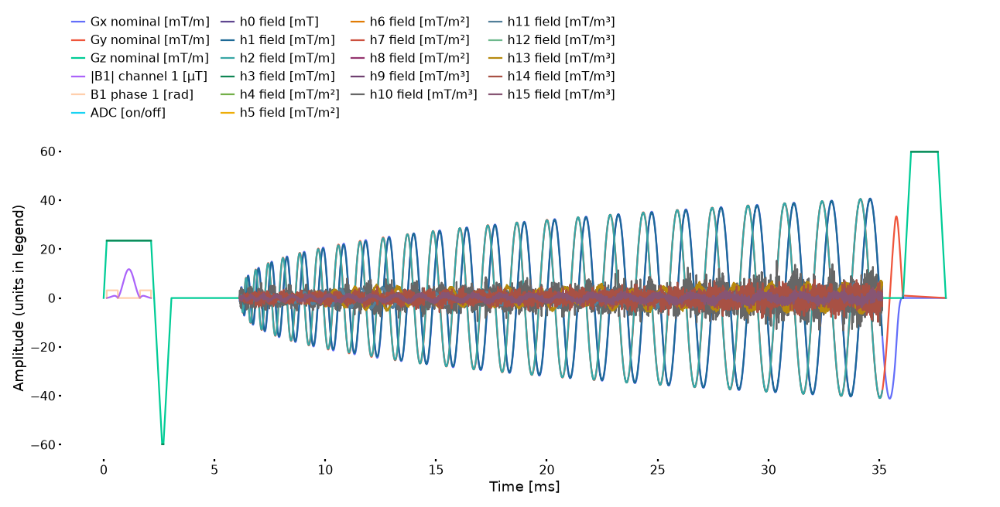
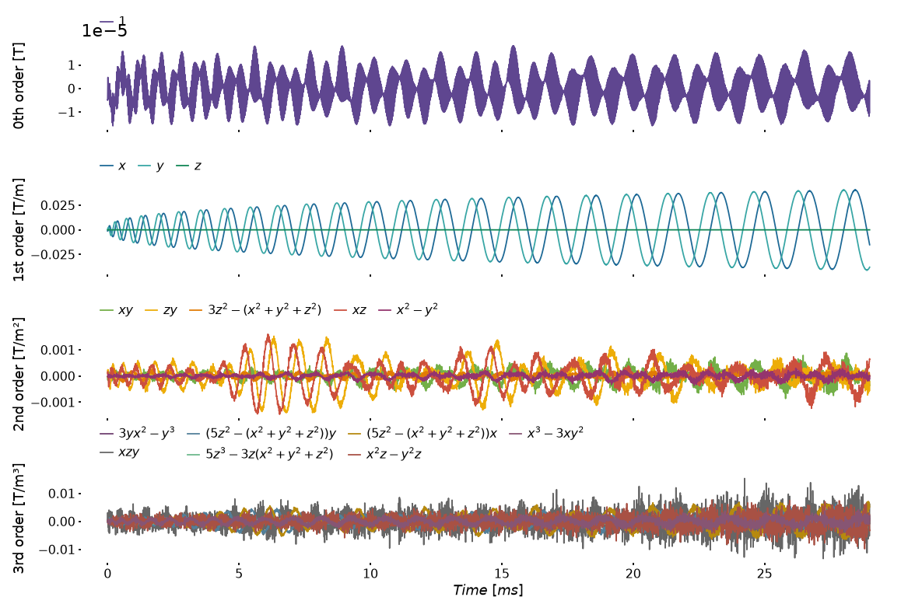
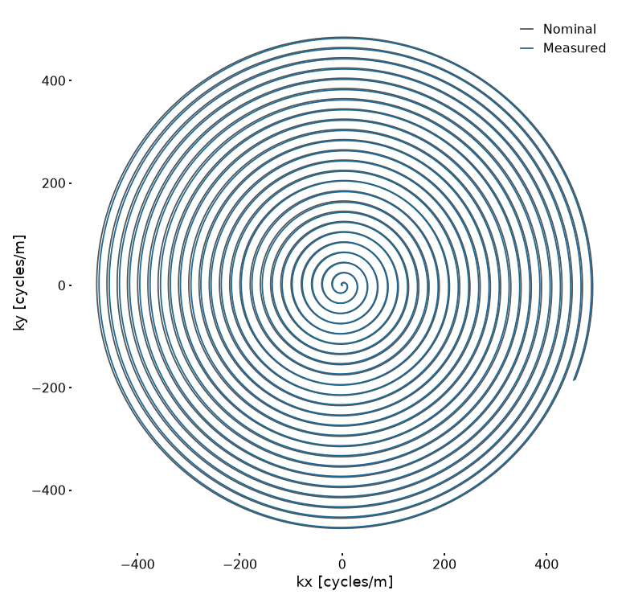
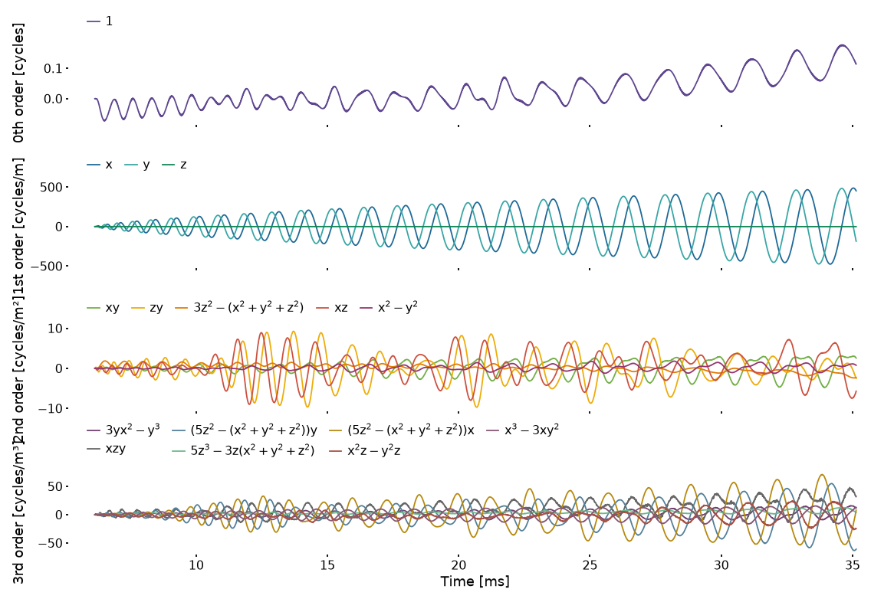
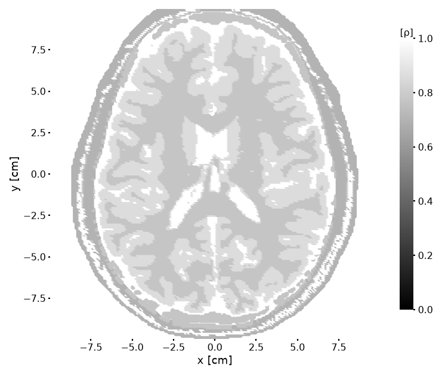
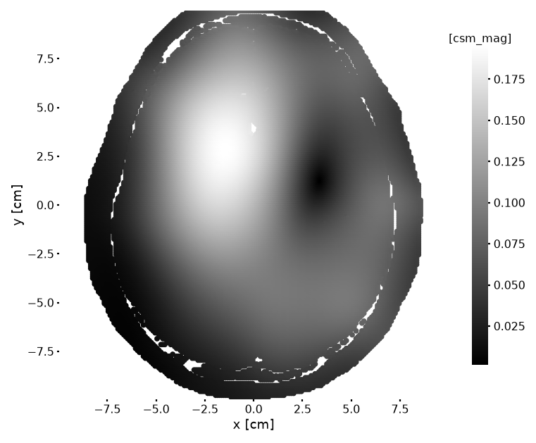
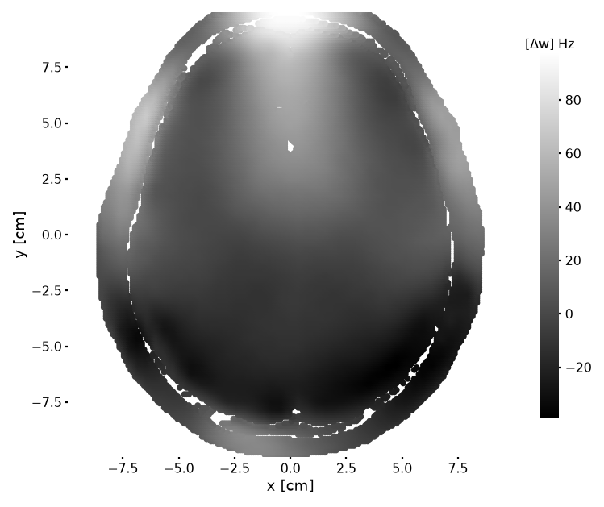

Plotting and Field Inspection
The examples use the bundled 2D spiral demo: its Pulseq sequence, measured high-order fields, brain phantom, and receive maps. They run on CPU and do not simulate signals or reconstruct images. Start Julia from the repository root with --project=. so the current checkout and its shared input loader are used. The release-pinned demo/ project is for the separate end-to-end workflow.
The plt_* helpers return Matplotlib figures without changing the input data. Save figures explicitly and close them when finished. Dense waveform examples are exported as PNG; SVG or PDF export is also available through savefig.
Figures and axes use white backgrounds with dark labels by default. Field colors, trajectory colors, and image colormaps are unchanged. Override color_facecolor and color_label for another style. For transparent export, use fig.savefig("figure.svg"; transparent=true); choose label colors that remain readable on the destination background.
Inspect a sequence and its field coefficients
using HighOrderMRISim
import PyPlot
demo_plots = false
include(joinpath(pkgdir(HighOrderMRISim), "demo2D", "1_load_inputs.jl"))
fig = plt_seq(hoseqMeasured; height=10, fontsize_label=8, fontsize_ticklabel=7)[ Info: Loading sequence 7T_1p0_200_r4.seq ...
Nominal gradients, RF, ADC, and supplied fields have different units, shown in the legend. Labels h0 field through h15 field identify the coefficients in HO_Sequence.GR_dfc. Enabled first-order fields are replacements during precession, not additive gradient errors. For a model comparison, use the same field mask as the simulation; the plots show supplied waveforms rather than applying a mask. The shared loader retains the demo's field sign, synchronization delay, trajectory differentiation, and block assignment; these are not reimplemented in the documentation.
For separate axes by field order, plot the measured readout coefficients on their acquisition time grid:
fields = permutedims(bfieldMeasured)
field_times = (datatime[1:end-1] .+ datatime[2:end]) ./ 2
fig = plt_bfield(fields, dt_adc; units=:T, times=field_times,
width=18, height=12, fontsize_label=8, fontsize_ticklabel=7, linewidth=0.8)
Differentiating N trajectory samples gives N−1 interval values, plotted at their acquisition-time midpoints. This panel uses the acquisition's time origin; the sequence overview includes the assigned waveform ramps in sequence time. Input times are seconds; the plots display milliseconds. units=:T labels supplied values in T/mⁿ and does not rescale them. The raw-array default is :mT; choose it only for values already expressed in mT/mⁿ.
Inspect nominal and measured encoding
nominal, nominal_adc, field_encoding, field_adc = get_kspace(hoseqMeasured)
fig = plt_traj([nominal_adc, field_adc[:, 2:4]];
projection=:xy, labels=["Nominal", "Measured"], width=12, height=12,
fontsize_label=8, fontsize_ticklabel=7, linewidth=0.8)
ax = first(fig.axes)
for (line, color) in zip(ax.get_lines(), ("#555555", "#1d6996"))
line.set_color(color)
end
ax.legend(fontsize=7, frameon=false, handlelength=1)
The nominal ADC array has three Cartesian columns; the field encoding has 16 columns. Rows 2–4 of the field basis correspond to columns 2–4 of the measured encoding: kx, ky, and kz in cycles/m. The figure selects the x/y projection and retains the nominal gray and measured blue colors. Use plt_kspace(hoseqMeasured; source=:both) for a 3D first-order view. Neither plot compresses all high-order terms into Cartesian coordinates.
Use plt_kspha to inspect the generalized encoding:
adc_times = HighOrderMRISim.KomaMRIBase.get_adc_sampling_times(
HighOrderMRISim.simulation_sequence(hoseqMeasured))
fig = plt_kspha(field_adc, dt_adc; units=:cycles, times=adc_times,
width=18, height=12, fontsize_label=8, fontsize_ticklabel=7, linewidth=0.8)
These arrays use cycles/mⁿ. The legacy raw-array default for plt_kspha is :rad; that option changes labels, not data. An explicit times vector avoids assuming uniformly spaced ADC samples or a particular time origin. get_kspace uses the native RF conventions; reconstruction uses the RF-referenced encoding saved by the demo exporter. Do not substitute one array for the other blindly.
Inspect phantom maps
fig = plt_phantom(obj, :ρ; view_2d=true, axis="axial",
width=12, height=12, markersize=25, fontsize_label=8, fontsize_ticklabel=7)
This is the same 200 × 200 × 1 grid used by simulation and reconstruction, with 1 × 1 × 4 mm voxels. The loader uses all 32 receive channels; one channel can be inspected without changing or renormalizing the stored sensitivities:
fig = plt_phantom(obj, :csm_mag; coil_idx=1, view_2d=true, axis="axial",
width=12, height=12, markersize=25, fontsize_label=8, fontsize_ticklabel=7)
Static fieldmap
The 2D demo loads a real fieldmap but sets obj.Δw to zero because B0 = false by default. Load a separate reference phantom to show the original map on the same grid without changing the simulation inputs:
field_obj = hophantom_brain(brainphantom, target_res, target_matrix, location, offcenter;
fieldstrength, b0_type, csm_type, csm_nCoil, verbose=false)
fig = plt_phantom(field_obj, :Δw; view_2d=true, axis="axial",
width=12, height=12, markersize=25, fontsize_label=8, fontsize_ticklabel=7)
The colorbar shows frequency offsets in Hz, converted from the stored Δw in rad/s. This is the static phantom map, not a map of the time-varying high-order field at a particular instant. No fitted scaling or B0 correction is applied.
Coordinates are stored in metres and displayed in centimetres. A 2D view is a projection, not a slice: axial uses x/y, coronal x/z, and sagittal y/z. :Δw is displayed in Hz from rad/s. :T1, :T2, and :T2s are displayed in ms. Use :csm_mag or :csm_pha with coil_idx for receive maps; phase is in radians. Empty phantoms and invalid coil indices produce explicit argument errors.
The normalization and standardization image helpers map constant finite images to floating-point zeros. This display preprocessing must not be applied to quantitative simulation/reconstruction comparisons to hide intensity errors.